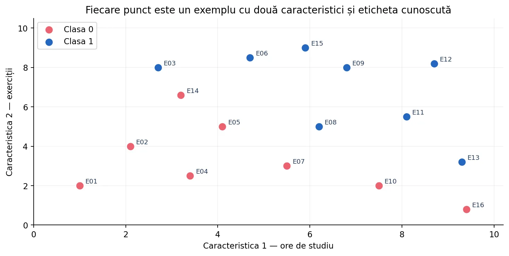
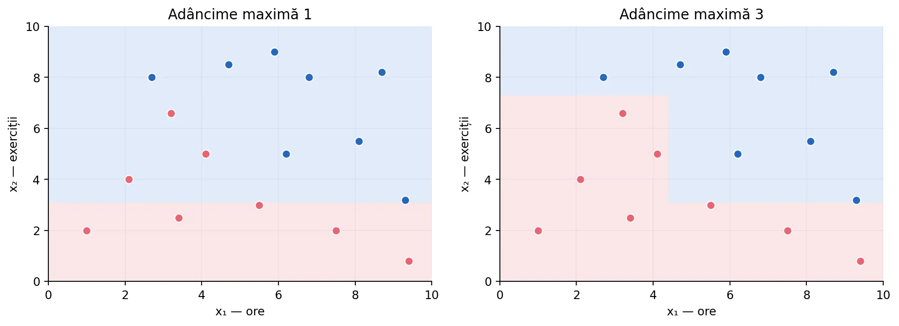
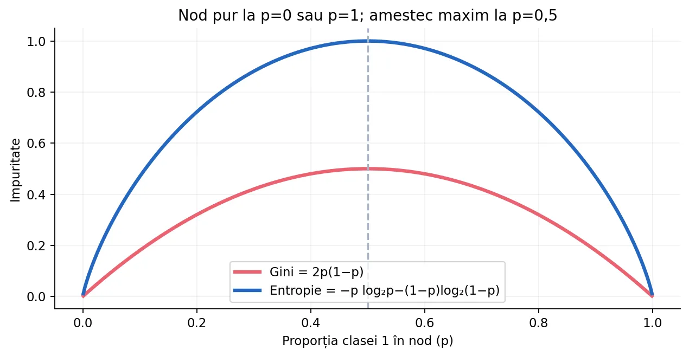
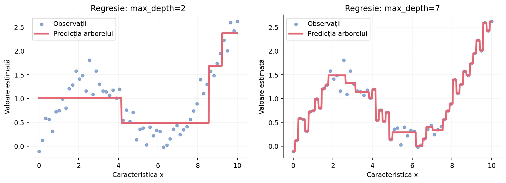
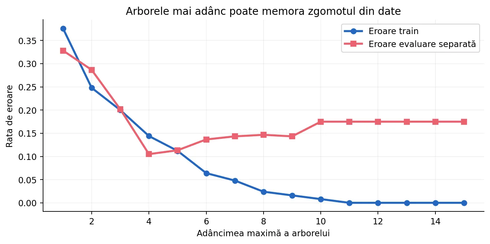
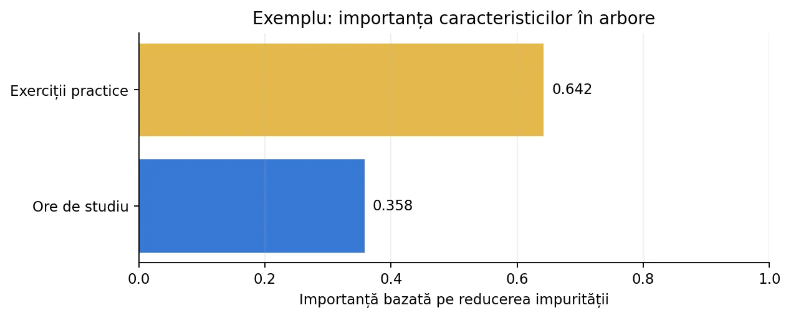

Construim un arbore adevărat pornind de la exemple etichetate: identificăm ce exemple rămân în fiecare nod, calculăm manual Gini și entropia, alegem praguri și parcurgem întrebările pentru exemple noi. Implementăm algoritmul pas cu pas în Python, apoi folosim scikit-learn.
Un arbore de decizie este un model de învățare supervizată care învață o succesiune de întrebări simple. Fiecare întrebare folosește o caracteristică a exemplului și o regulă: „numărul de exerciții este cel mult 3,1?” sau „temperatura depășește 25 °C?”. În funcție de răspuns, coborâm pe una dintre cele două ramuri. La final ajungem într-o frunză, de unde obținem o predicție.
Pentru clasificare, predicția este o categorie (de exemplu, 0 = nu, 1 = da). Pentru regresie, predicția este un număr real, de exemplu o notă estimată, o temperatură sau o valoare a unui senzor. Modelul nu este o listă de întrebări scrise manual: întrebările și pragurile sunt învățate din exemple etichetate.
Folosim un set sintetic de 16 observații. Fiecare exemplu are două caracteristici numerice: x₁ = ore de pregătire și x₂ = exerciții practice, iar clasa cunoscută este 0 sau 1. Fiecare observație primește un identificator E01, E02, ... pentru a putea urmări cu precizie în ce nod ajunge. Acesta este numai un exemplu didactic; nu reprezintă o evaluare reală a elevilor.
| ID | x₁ (ore) | x₂ (exerciții) | Clasă |
|---|---|---|---|
| E01 | 1,0 | 2,0 | 0 |
| E02 | 2,1 | 4,0 | 0 |
| E03 | 2,7 | 8,0 | 1 |
| E05 | 4,1 | 5,0 | 0 |
| E06 | 4,7 | 8,5 | 1 |
| E08 | 6,2 | 5,0 | 1 |
| E10 | 7,5 | 2,0 | 0 |
| E12 | 8,7 | 8,2 | 1 |
În laborator poți selecta un nod și vezi toate rândurile care au ajuns în el — nu doar cele opt rânduri ilustrative din tabelul de mai sus. O observație din antrenare se duce într-un singur copil la fiecare împărțire: exemplul nu este copiat pe ambele ramuri.

La început, rădăcina conține toate cele 16 exemple. O împărțire (split) creează doi copii: stânga primește observațiile pentru care testul este adevărat, iar dreapta le primește pe cele pentru care este fals. Într-o frunză nu se mai pune nicio întrebare: se folosește distribuția claselor sau media țintelor. Adâncimea rădăcinii este 0; copiii ei au adâncimea 1 etc.
Pentru algoritmul CART utilizat de scikit-learn, o întrebare numerică are forma x[j] <= prag. Un exemplu cu valoarea exact egală cu pragul merge la stânga. Dimensiunea unui nod este numărul de observații de antrenare ajunse în acesta, nu numărul total de exemple din setul inițial.
În setul nostru, o împărțire bună a rădăcinii este x₂ ≤ 3,1?. În copilul stâng ajung exact E01, E04, E07, E10 și E16, toate de clasa 0. În copilul drept rămân celelalte 11 exemple. Așadar, am separat un grup deja „pur” de clasa 0 și am restrâns problema pentru copilul drept.
Următoarea întrebare, aplicată numai celor 11 exemple din dreapta, este x₁ ≤ 4,4?. Copilul stâng al acestei a doua întrebări conține E02, E03, E05 și E14, cu etichete [0,1,0,0]; cel drept conține E06, E08, E09, E11, E12, E13 și E15, toate de clasa 1. În submulțimea [E02,E03,E05,E14] putem întreba încă o dată x₂ ≤ 7,3?, izolând E03 (clasa 1) de cele trei exemple cu clasa 0.

Presupunem că avem un exemplu nou q = (3,0 ore, 8,4 exerciții). Nu cunoaștem clasa lui. Parcurgem arborele construit, pornind din rădăcină:
8.4 <= 3.1. Fals ⇒ dreapta, către nodul cu 11 exemple.3.0 <= 4.4. Adevărat ⇒ stânga, către nodul cu E02, E03, E05, E14.8.4 <= 7.3. Fals ⇒ dreapta, către frunza cu E03.Observă că exemplul nou nu modifică arborele. Arborele a fost construit din datele de antrenare; la predicție testăm doar condițiile de pe drumul până la o frunză. O frunză cu clase [0,0,1] ar prezice clasa 0, iar probabilitatea empirică a clasei 1 ar fi 1/3, dacă nu s-au folosit ponderi.
def prezice_arbore(nod, x): while "stanga" in nod: j = nod["caracteristica"] prag = nod["prag"] if x[j] <= prag: nod = nod["stanga"] else: nod = nod["dreapta"] return nod["clasa"]
Dacă întrebarea separă aproximativ egal exemple din ambele clase, nu am făcut mare progres. În schimb, dacă fiecare copil conține, pe cât posibil, observații de aceeași clasă, următoarele decizii devin mai ușoare. Căutăm o împărțire care reduce impuritatea. Aceasta este diferența dintre un arbore construit arbitrar și un arbore antrenat.
Pentru fiecare caracteristică numerică se sortează valorile distincte și se consideră praguri între valori consecutive. Dacă valorile sunt 2, 4 și 9, două praguri candidate sunt 3 și 6,5. Nu are rost să examinăm fiecare număr real posibil: două praguri între aceleași valori consecutive trimit exact aceleași exemple pe ramuri.
Pentru un nod în care p₀ reprezintă proporția clasei 0 și p₁ proporția clasei 1, definim impuritatea Gini:
Dacă toate exemplele sunt din aceeași clasă, Gini = 0: nodul este pur. Dacă avem jumătate din fiecare clasă, Gini = 0,5: amestecul este maxim în cazul binar. Dacă din 10 observații 8 sunt clasa 0 și 2 clasa 1, Gini = 1 − (0,8² + 0,2²) = 0,32.
Pentru mai mult de două clase, suma se face pentru fiecare clasă: Gini = 1 − Σ pᵢ². Gini nu este precizia clasificatorului și nici procentul de răspunsuri greșite: este o măsură a amestecului etichetelor dintr-un nod.
def gini(etichete): if len(etichete) == 0: return 0.0 frecvente = {} for clasa in etichete: frecvente[clasa] = frecvente.get(clasa, 0) + 1 rezultat = 1.0 for nr in frecvente.values(): p = nr / len(etichete) rezultat -= p * p return rezultat print(gini([0, 0, 0, 0])) # 0.0 print(gini([0, 0, 1, 1])) # 0.5 print(gini([0] * 8 + [1] * 2)) # 0.32
O altă măsură a impurității este entropia Shannon, din teoria informației. Pentru clasele cu proporții pᵢ, ea este:
În clasificarea binară, pentru distribuția [50%, 50%] obținem entropia 1 bit, iar pentru [100%, 0%] obținem 0. Pentru [75%,25%] avem H ≈ 0,811. Atât Gini, cât și entropia preferă nodurile pure, dar pot ordona diferit unele împărțiri. Valorile lor numerice nu sunt direct comparabile: au scale diferite.

from math import log2 def entropie(etichete): n = len(etichete) if n == 0: return 0.0 frecvente = {} for y in etichete: frecvente[y] = frecvente.get(y, 0) + 1 h = 0.0 for nr in frecvente.values(): p = nr / n h -= p * log2(p) return h print(round(entropie([0, 0, 0, 1]), 3)) # 0.811
Pentru un nod S cu n observații și o întrebare care creează Sst și Sdr, calculăm impuritatea medie ponderată după câte exemple ajung în fiecare copil:
Exemplu: rădăcina are 10 observații, dintre care 6 din clasa 0 și 4 din clasa 1. Gini înainte = 1 − 0,6² − 0,4² = 0,48. O întrebare trimite 4 exemple 0 în stânga (Gini = 0) și restul de 6, cu 2 din clasa 0 și 4 din clasa 1, în dreapta (Gini = 4/9 ≈ 0,444). Scor după = (4/10)·0 + (6/10)·(4/9) ≈ 0,267. Câștig ≈ 0,213.
Este un algoritm greedy: alege cea mai bună împărțire acum, în nodul curent. Nu garantează arborele global optim dintre toate structurile posibile. De aceea hiperparametrii de control al complexității și validarea sunt esențiale.
Începem cu cea mai mică variantă posibilă de arbore: o singură întrebare, adică două frunze. Pentru simplificare, avem o singură caracteristică numerică și clase 0/1. Codul evaluează praguri între valorile consecutive distincte.
def gini_binar(etichete): if not etichete: return 0.0 p = sum(etichete) / len(etichete) return 2 * p * (1 - p) def cel_mai_bun_prag(x, y): valori = sorted(set(x)) scor_minim = float("inf") rezultat = None for i in range(len(valori) - 1): prag = (valori[i] + valori[i + 1]) / 2 st = [y[j] for j in range(len(x)) if x[j] <= prag] dr = [y[j] for j in range(len(x)) if x[j] > prag] scor = (len(st) * gini_binar(st) + len(dr) * gini_binar(dr)) / len(y) if scor < scor_minim: scor_minim = scor rezultat = prag return rezultat, scor_minim x = [1, 2, 3, 7, 8, 9] y = [0, 0, 0, 1, 1, 1] print(cel_mai_bun_prag(x, y)) # (5.0, 0.0)
Trecem la oricâte caracteristici numerice. Fiecare nod este un dicționar Python. Dacă este frunză, memorăm clasa majoritară, numărul exemplelor și distribuția. Altfel, memorăm indexul caracteristicii, pragul și cei doi subarbori. Am separat funcția care caută împărțirea de funcția recursivă care construiește arborele: astfel codul este mai ușor de urmărit.
def gini_lista(valori): if not valori: return 0.0 f = {} for y in valori: f[y] = f.get(y, 0) + 1 return 1 - sum((nr / len(valori)) ** 2 for nr in f.values()) def cauta_split(X, y, indici, min_frunza=1): cel_mai_bun = None scor_minim = gini_lista([y[i] for i in indici]) for j in range(len(X[0])): valori = sorted(set(X[i][j] for i in indici)) for t in range(len(valori) - 1): prag = (valori[t] + valori[t + 1]) / 2 st = [i for i in indici if X[i][j] <= prag] dr = [i for i in indici if X[i][j] > prag] if min(len(st), len(dr)) < min_frunza: continue scor = (len(st) * gini_lista([y[i] for i in st]) + len(dr) * gini_lista([y[i] for i in dr])) / len(indici) if scor < scor_minim - 1e-12: scor_minim = scor cel_mai_bun = (j, prag, st, dr) return cel_mai_bun def construieste_arbore(X, y, indici, adancime=0, max_adancime=3, min_frunza=1): frecvente = {} for i in indici: frecvente[y[i]] = frecvente.get(y[i], 0) + 1 clasa = max(sorted(frecvente), key=lambda c: frecvente[c]) nod = {"clasa": clasa, "n": len(indici), "exemple": indici[:], "frecvente": frecvente} if adancime == max_adancime or len(frecvente) == 1: return nod split = cauta_split(X, y, indici, min_frunza) if split is None: return nod j, prag, st, dr = split nod["caracteristica"] = j nod["prag"] = prag nod["stanga"] = construieste_arbore( X, y, st, adancime + 1, max_adancime, min_frunza) nod["dreapta"] = construieste_arbore( X, y, dr, adancime + 1, max_adancime, min_frunza) return nod def prezice(nod, x): while "stanga" in nod: if x[nod["caracteristica"]] <= nod["prag"]: nod = nod["stanga"] else: nod = nod["dreapta"] return nod["clasa"] X = [[1, 2], [2, 4], [3, 8], [5, 3], [6, 6], [8, 8], [9, 2], [9, 7]] y = [0, 0, 1, 0, 1, 1, 0, 1] arbore = construieste_arbore(X, y, list(range(len(X)))) print(prezice(arbore, [7, 6]))
Când desenezi un arbore manual, pentru fiecare nod notează: condiția, identificatorii exemplelor, numărul pe clasă și impuritatea. Fără această evidență, este ușor să aplici din greșeală o întrebare și exemplelor care au fost trimise pe altă ramură.
| Nod | Condiție | Exemple păstrate | Predicția locală |
|---|---|---|---|
| Rădăcină | x₂ ≤ 3,1 | E01–E16 | votul majoritar |
| Stânga | frunză | E01, E04, E07, E10, E16 | 0 |
| Dreapta | x₁ ≤ 4,4 | restul de 11 exemple | depinde de subramură |
| Dreapta–Stânga | x₂ ≤ 7,3 | E02, E03, E05, E14 | 0 |
| Dreapta–Dreapta | frunză | E06, E08, E09, E11, E12, E13, E15 | 1 |
În simulator, fiecare dreptunghi al arborelui este un nod selectabil; când faci click pe el, sunt evidențiate numai punctele sale, iar tabelul reproduce lista completă. La fiecare pas al construcției este păstrat și un jurnal al seturilor de exemple din ambele ramuri.
La clasificare binară avem două etichete, de exemplu 0 și 1. Pentru clasificare multiclasă putem avea 3 sau mai multe. Arborele CART rămâne binar în structura întrebărilor, dar o frunză poate conține frecvențe pentru toate clasele. Clasa prezisă este cea cu frecvența (sau ponderea) cea mai mare.
Dacă o frunză conține 10 observații, dintre care 7 sunt „pisică”, 2 „câine” și 1 „iepure”, atunci frecvențele relative sunt 0,7; 0,2; 0,1, iar predict_proba poate returna [0,7, 0,2, 0,1] în ordinea classes_. Aceste valori reflectă distribuția din frunză, dar nu garantează automat probabilități bine calibrate pe date noi.
def probabilitati_frunza(nod): nr = nod["n"] return {c: f / nr for c, f in nod["frecvente"].items()} frunza = {"n": 10, "frecvente": {"pisica": 7, "caine": 2, "iepure": 1}} print(probabilitati_frunza(frunza))
Când ținta este numerică — de exemplu un consum, un preț sau durata unei activități — construim un arbore de regresie. Rutele sunt aceleași întrebări Da/Nu, dar în frunză predicția uzuală este media valorilor y ale observațiilor din frunză. De exemplu, pentru valorile [10, 12, 20] predicția este (10+12+20)/3 = 14.
Pentru alegerea întrebărilor folosim, de obicei, eroarea pătratică medie din nod: MSE = (1/n)Σ(yᵢ−media)². Impuritatea este zero dacă toate valorile din nod sunt identice. Arborele este astfel o aproximare constantă pe regiuni, nu o regresie liniară în fiecare frunză. Un arbore simplu nu extrapolează natural dincolo de valorile văzute.

def mse_valori(valori): medie = sum(valori) / len(valori) return sum((v - medie) ** 2 for v in valori) / len(valori) print(round(mse_valori([10, 12, 20]), 3)) # 18.667 print(sum([10, 12, 20]) / 3) # 14.0
Structura recursivă rămâne identică. Înlocuim impuritatea Gini cu MSE și clasa majoritară cu media. Pentru a evita repetarea întregului cod, mai jos apare un arbore cu o singură caracteristică, suficient pentru a înțelege complet ideea.
def mse(y): m = sum(y) / len(y) return sum((a - m) ** 2 for a in y) / len(y) def arbore_regresie_1d(x, y, adancime=0, limita=3): nod = {"valoare": sum(y) / len(y), "n": len(y)} if adancime >= limita or len(set(x)) <= 1: return nod praguri = sorted(set(x)) scor_optim = mse(y) alegere = None for j in range(len(praguri) - 1): prag = (praguri[j] + praguri[j + 1]) / 2 st = [i for i in range(len(x)) if x[i] <= prag] dr = [i for i in range(len(x)) if x[i] > prag] scor = (len(st) * mse([y[i] for i in st]) + len(dr) * mse([y[i] for i in dr])) / len(y) if scor < scor_optim - 1e-12: scor_optim = scor alegere = (prag, st, dr) if alegere is not None: prag, st, dr = alegere nod["prag"] = prag nod["stanga"] = arbore_regresie_1d( [x[i] for i in st], [y[i] for i in st], adancime+1, limita) nod["dreapta"] = arbore_regresie_1d( [x[i] for i in dr], [y[i] for i in dr], adancime+1, limita) return nod def prezice_regresie(nod, x): while "stanga" in nod: nod = nod["stanga"] if x <= nod["prag"] else nod["dreapta"] return nod["valoare"] arb = arbore_regresie_1d([1,2,3,7,8,9], [3,4,5,15,16,17]) print(round(prezice_regresie(arb, 7.5), 2))
Nu toate caracteristicile sunt numere. Unele sunt categorii nominale („culoare”: roșu/verde/albastru; „tip material”: lemn/plastic/metal), altele sunt ordinale (mic/mediu/mare). Un arbore conceptual poate pune întrebări precum „culoarea este roșu?”, dar scikit-learn DecisionTreeClassifier și DecisionTreeRegressor nu au suport nativ pentru categorii text în API-ul standard: trebuie să le transformăm în caracteristici numerice.
Pentru categorii nominale folosim one-hot encoding. Exemplu: roșu → [1,0,0], verde → [0,1,0], albastru → [0,0,1]. Evităm codificarea arbitrară roșu=0, verde=1, albastru=2, pentru că introduce o ordine și praguri numerice fără sens. Pentru o categorie cu ordine reală, codificarea ordinală poate avea sens, dar trebuie justificată. Valorile lipsă trebuie de asemenea tratate explicit (de exemplu, cu SimpleImputer, dacă este necesar).
from sklearn.compose import ColumnTransformer from sklearn.preprocessing import OneHotEncoder from sklearn.tree import DecisionTreeClassifier from sklearn.pipeline import Pipeline X = [["rosu", 2.0], ["verde", 4.0], ["albastru", 8.0], ["rosu", 7.0], ["verde", 1.5], ["albastru", 5.5]] y = [0, 0, 1, 1, 0, 1] pre = ColumnTransformer([ ("culori", OneHotEncoder(handle_unknown="ignore"), [0]), ("numere", "passthrough", [1]), ]) model = Pipeline([ ("preprocesare", pre), ("arbore", DecisionTreeClassifier(max_depth=3, random_state=42)) ]) model.fit(X, y) print(model.predict([["rosu", 6.0]]))
Pentru K-NN sau modele bazate pe distanțe, scalarea poate schimba rezultatele. Un arbore bazat pe praguri verifică în schimb ordinea valorilor. Transformarea unei caracteristici cu o funcție strict crescătoare (de exemplu x → 100x + 5) păstrează ordinea observațiilor și, în condiții uzuale, aceleași împărțiri sunt posibile. De aceea, StandardScaler nu este de regulă obligatoriu pentru arbori.
Atenție: această observație se referă la transformări monotone și la arbori standard; nu înseamnă că orice preprocesare este inutilă. Codificarea categoriilor, rezolvarea valorilor lipsă, unitățile și calitatea datelor rămân importante.
Dacă lăsăm un arbore să se împartă până când fiecare frunză conține o singură observație, el poate clasifica perfect setul de antrenare, inclusiv exemplele eronate și zgomotul. Dar un exemplu nou, apropiat de o observație atipică, poate primi o predicție greșită. Acesta este overfittingul: performanță aparent excelentă pe train, performanță slabă pe date nevăzute.
Simetric, un arbore cu adâncimea 1 poate rata o structură importantă: underfitting. Între cele două extreme alegem complexitatea evaluând modelul pe o mulțime de validare. În context ONIA, dacă verifici mereu scorul public după fiecare schimbare și îl folosești ca singur criteriu, riști să supraînveți chiar subsetul public; scorul final pe exemple necunoscute poate scădea.

Separăm train/validare/test înainte de alegerea hiperparametrilor. Nu folosim scorul final pentru tuning; scorul public, dacă este disponibil, nu trebuie tratat ca substitut pentru o validare locală solidă.
Înainte să construim un arbore prea complex putem impune restricții: max_depth limitează numărul de întrebări pe un drum; min_samples_split controlează când un nod poate fi împărțit; min_samples_leaf impune un număr minim de exemple în fiecare copil/frunză; max_leaf_nodes limitează totalul frunzelor; min_impurity_decrease impune un câștig minim.
De exemplu, pentru un nod cu 7 exemple și min_samples_leaf=4, nu există nicio împărțire în doi copii valizi: ar necesita minimum 8 exemple. Un arbore mai simplu are adesea predicții mai robuste, dar dacă este prea simplu poate subînvăța.
O altă abordare este să construim inițial un arbore mai complex și apoi să eliminăm unele subramuri. În scikit-learn folosim cost-complexity pruning, controlat de ccp_alpha. Ideea este să echilibrăm cât de bine se potrivesc frunzele cu datele și cât de mare este arborele:
Când α este mai mare, frunzele în plus sunt penalizate mai puternic, iar arborele poate fi mai mic. Valoarea potrivită pentru α se alege pe validare/cross-validation, nu doar după train. Pentru arborele nostru didactic, panoul cu max_depth și min_samples_leaf permite simularea unor forme de pre-pruning.
Dacă avem două caracteristici, fiecare condiție x₁ ≤ t corespunde unei linii verticale, iar x₂ ≤ t unei linii orizontale. O succesiune de astfel de întrebări împarte planul în dreptunghiuri (sau regiuni formate din dreptunghiuri), fiecare asociată unei frunze. Aceasta explică de ce arborii CART pot reprezenta interacțiuni neliniare, dar frontierele lor tind să fie aliniate cu axele.
Într-un spațiu cu k caracteristici, tăieturile sunt hiperplane aliniate cu axele, de exemplu x₃ ≤ 2,7. Nu putem desena direct spațiul 10D, dar regula și traseul prin arbore sunt identice.
Nu este o alegere suficientă, de unul singur, pentru date brute de foarte mare dimensiune (de exemplu imagini ca milioane de pixeli), pentru seturi foarte mici și zgomotoase sau pentru relații ce necesită extrapolare. În astfel de cazuri pot fi potrivite alte modele sau ansambluri de arbori.
Pentru regresie, un arbore dă predicții constante pe regiuni și nu extrapolează natural valori dincolo de domeniul observat. Dacă situația cere o relație fizică netedă sau extrapolare, un model liniar/polinomial justificat sau alt model poate fi mai potrivit.
Clasele DecisionTreeClassifier și DecisionTreeRegressor sunt implementări CART. Următorul exemplu separă datele înainte de antrenare, fixează random_state pentru reproductibilitate și limitează arborele la trei niveluri.
from sklearn.datasets import load_iris from sklearn.model_selection import train_test_split from sklearn.tree import DecisionTreeClassifier from sklearn.metrics import accuracy_score, classification_report iris = load_iris() X_train, X_test, y_train, y_test = train_test_split( iris.data, iris.target, test_size=0.25, random_state=42, stratify=iris.target ) model = DecisionTreeClassifier( criterion="gini", max_depth=3, min_samples_leaf=2, random_state=42 ) model.fit(X_train, y_train) y_pred = model.predict(X_test) print("Accuracy:", round(accuracy_score(y_test, y_pred), 3)) print(classification_report(y_test, y_pred, target_names=iris.target_names))
După antrenare, putem desena nodurile sau tipări regulile într-un format ușor de citit. plot_tree poate afișa impuritatea, numărul de observații și distribuția etichetelor; export_text este foarte util la olimpiadă pentru a urmări compararea cu un prag.
import matplotlib.pyplot as plt from sklearn.datasets import load_iris from sklearn.tree import DecisionTreeClassifier, plot_tree, export_text iris = load_iris() model = DecisionTreeClassifier(max_depth=3, random_state=42) model.fit(iris.data, iris.target) plt.figure(figsize=(15, 7)) plot_tree(model, feature_names=iris.feature_names, class_names=iris.target_names, filled=True, rounded=True, fontsize=9) plt.tight_layout() plt.show() print(export_text(model, feature_names=list(iris.feature_names)))
În mod tipic, în casetele arborelui vezi samples, value, gini și clasa prezisă. În graficele multiclase, value descrie distribuția în clase conform afișării folosite de versiunea bibliotecii.
În scikit-learn, metoda decision_path returnează nodurile vizitate de fiecare observație, iar apply întoarce indexul frunzei finale. Acestea sunt excelente pentru debugging și explicații: poți reproduce întrebările exacte de pe traseu.
from sklearn.datasets import load_iris from sklearn.tree import DecisionTreeClassifier iris = load_iris() model = DecisionTreeClassifier(max_depth=3, random_state=42) model.fit(iris.data, iris.target) exemplu = iris.data[[0]] indicii = model.decision_path(exemplu).indices frunza = model.apply(exemplu)[0] print("Noduri vizitate:", indicii.tolist()) print("Frunză:", frunza) for nod in indicii: j = model.tree_.feature[nod] if j >= 0: prag = model.tree_.threshold[nod] print(f"Nod {nod}: {iris.feature_names[j]} <= {prag:.3f}?") print("Predicție:", model.predict(exemplu)[0])
Regresia folosește aceeași interfață fit / predict, dar valoarea țintă este numerică și evaluăm eroarea de regresie (MAE, MSE, R²). Un arbore foarte adânc poate produce multe trepte și supraînvățare.
from sklearn.tree import DecisionTreeRegressor from sklearn.metrics import mean_absolute_error, mean_squared_error X_train = [[1], [2], [3], [5], [6], [8], [9]] y_train = [3.1, 4.0, 4.5, 8.2, 9.1, 11.8, 12.0] model = DecisionTreeRegressor( max_depth=2, min_samples_leaf=2, random_state=42 ) model.fit(X_train, y_train) X_test = [[2.5], [7.0]] y_test = [4.3, 10.2] predictii = model.predict(X_test) print("Predicții:", predictii.round(2).tolist()) print("MAE:", round(mean_absolute_error(y_test, predictii), 3)) print("MSE:", round(mean_squared_error(y_test, predictii), 3))
| Parametru | Efect | Când îl ajustăm |
|---|---|---|
criterion | Clasificare: gini, entropy, log_loss. Regresie: squared_error, absolute_error, poisson. | Când vrem alt criteriu de împărțire, compatibil cu sarcina. |
max_depth | Adâncimea maximă a arborelui; None permite creștere mai profundă. | Pre-pruning pentru overfitting. |
min_samples_split | Număr minim de observații necesar pentru a împărți un nod. | Evităm split-uri pe eșantioane mici. |
min_samples_leaf | Număr minim în fiecare frunză. | Neteezirea predicțiilor, robustețe. |
max_leaf_nodes | Număr maxim de frunze. | Controlul complexității. |
ccp_alpha | Parametru pentru post-pruning. | Eliminăm ramuri slab justificate. |
class_weight | Doar clasificare: ponderăm clasele. | Clase dezechilibrate. |
random_state | Fixează sursele de aleatorism. | Experimente reproductibile. |
Nu ajustăm max_depth, min_samples_leaf sau ccp_alpha alegând direct varianta cu cel mai bun scor pe setul de test final. Alegem folosind cross-validation pe datele de antrenare, iar testul rămâne separat. La o olimpiadă cu scor public și scor final, selecția exagerată pe public poate conduce la supraînvățarea acelui subset.
from sklearn.datasets import load_iris from sklearn.model_selection import GridSearchCV, train_test_split from sklearn.tree import DecisionTreeClassifier X, y = load_iris(return_X_y=True) X_train, X_test, y_train, y_test = train_test_split( X, y, test_size=0.25, stratify=y, random_state=42 ) parametri = { "max_depth": [2, 3, 4, 5], "min_samples_leaf": [1, 2, 4], "ccp_alpha": [0.0, 0.001, 0.01] } cautare = GridSearchCV( DecisionTreeClassifier(random_state=42), param_grid=parametri, cv=4, scoring="accuracy" ) cautare.fit(X_train, y_train) print("Parametri aleși:", cautare.best_params_) print("Accuracy test:", round(cautare.score(X_test, y_test), 3))
Modelul scikit-learn expune feature_importances_, care rezumă reducerea impurității asociată împărțirilor fiecărei caracteristici. Este utilă pentru explorare, dar poate fi influențată de numărul de praguri posibile și de corelațiile dintre variabile. O importanță mare nu înseamnă neapărat relație cauzală.

Pentru interpretări mai robuste se pot folosi și metode precum permutation importance pe un set de validare reprezentativ, cu atenție la variabile corelate.
O regulă precum „dacă temperatura ≥ 25 și umiditatea < 50, atunci clasa 1” nu trebuie introdusă manual: arborele poate afla praguri separate, pe ramuri consecutive. Este una dintre diferențele față de un clasificator liniar cu o singură frontieră. Totuși, pentru o frontieră oblică, de exemplu x₁ + x₂ > 10, un arbore standard are nevoie de mai multe decupări dreptunghiulare pentru a aproxima o linie diagonală.
Arborii sunt modele interpretabilile când sunt mici. Pe măsură ce devin mari, pot fi greu de urmărit și sensibili la variații mici ale datelor.
| Avantaje | Limitări |
|---|---|
| Întrebări de tip if/else, ușor de explicat | Arborii adânci pot supraînvăța, în special pe date zgomotoase |
| Praguri neliniare, interacțiuni între caracteristici | Partiționări pe axe; frontiere în trepte |
| Nu necesită în general scalarea caracteristicilor | Pot fi instabili la modificări mici ale setului |
| Clasificare și regresie cu aceeași idee | Regresia nu extrapolează bine, prezice pe regiuni constante |
| Poate arăta calea unei predicții | Pentru categorie text este nevoie de codificare în scikit-learn |
Dacă ai multe relații instabile sau ai nevoie de performanță crescută, poți trece la modele ansamblu (Random Forest, Gradient Boosting), care vor fi studiate în secțiunea 2.6. Dacă ai o relație aproximativ liniară și date puține, un model liniar poate fi mai stabil și mai ușor de estimat.
Un profesor ar putea inventa regula „dacă numărul de exerciții este mai mare de 5, clasa va fi 1”. Un arbore învață pragurile din datele disponibile, astfel încât aceeași regulă poate fi diferită după includerea altor exemple. Avem deci două verificări distincte: (1) dacă am construit corect regulile pe antrenare și (2) dacă regulile generalizează pe observații noi.
La evaluarea unui arbore, urmărește matricea de confuzie, precision/recall/F1 la clasificare, respectiv MAE/MSE/R² la regresie. Un scor global ridicat poate ascunde performanță slabă pe o clasă rară.
x[j] ≤ prag.Documentația oficială scikit-learn descrie variantele CART, metricele, opțiunile de oprire și metodele de inspectare a structurii. Exemplele de cod și explicațiile acestei lecții sunt adaptate pentru pregătirea ONIA și pot fi utilizate ca suport autonom de lucru.